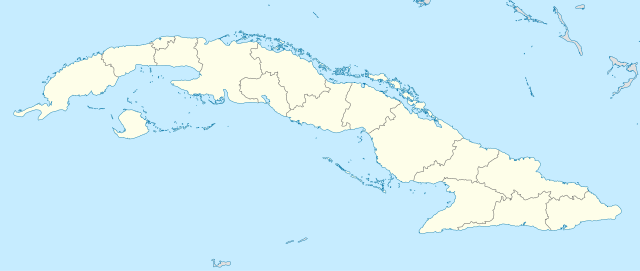
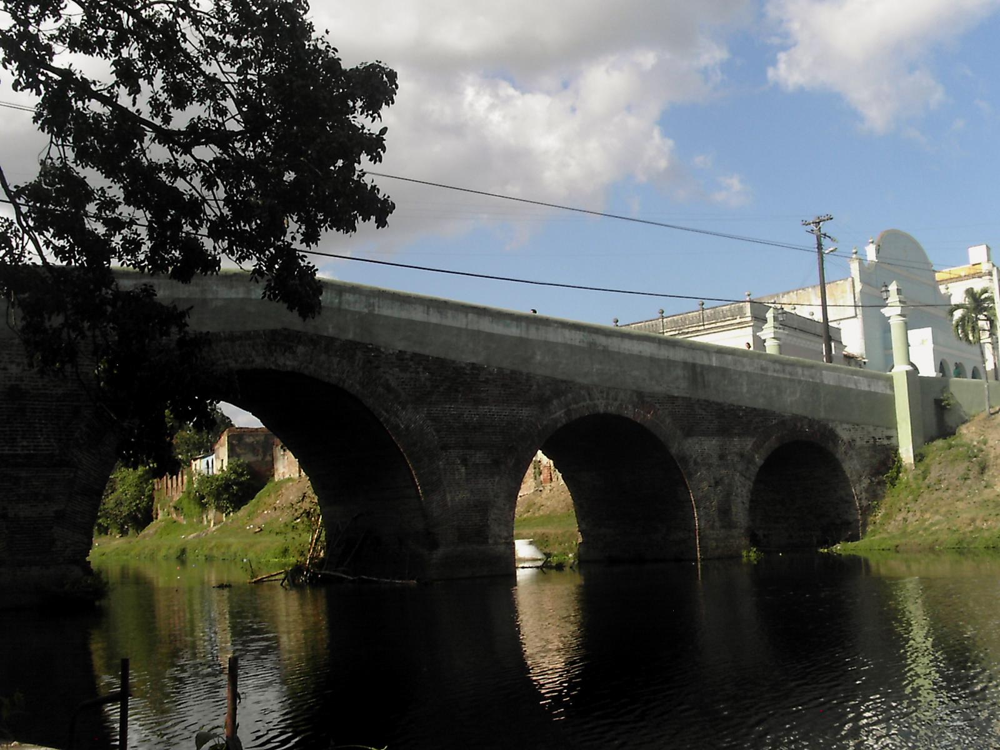
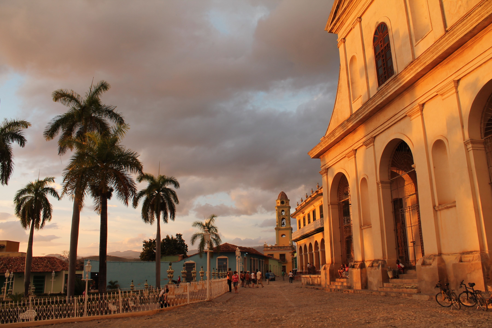
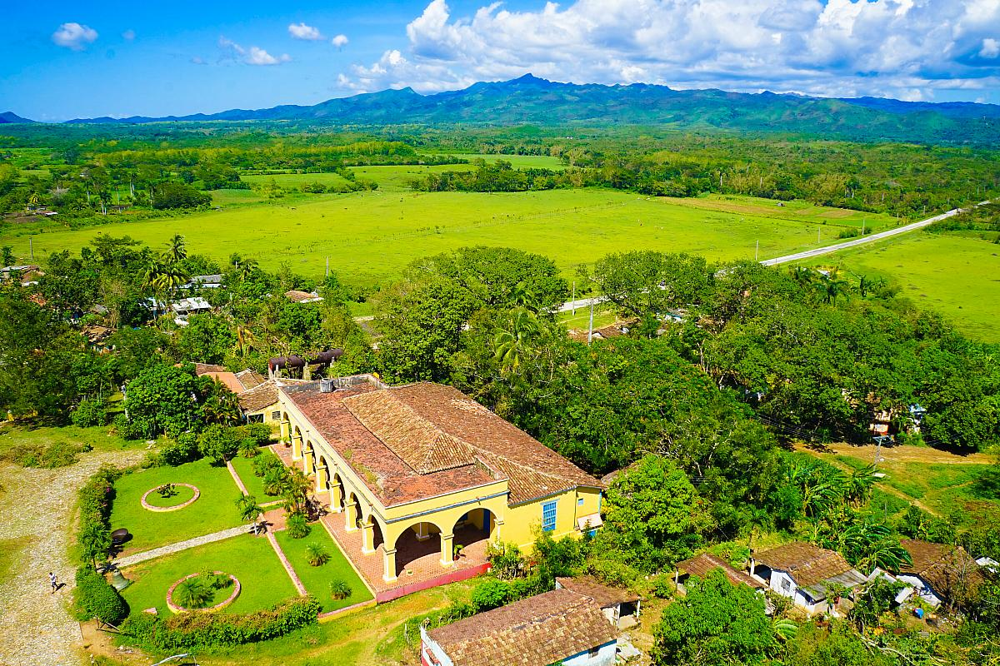

Ubicada en la zona central de la isla se encuentra la provincia de Sancti Spíritus, a los habitantes se les llama espirituanos o espirituanas. El nombre de la provincia proviene del latín Sanctus Spiritus que significa Espíritu Santo.
La ciudad capital llamada igual que la provincia fue fundada el 4 de junio de 1514 por Diego Velázquez de Cuéllar a orillas del río Tuinuú y en 1522 fue trasladada hacia su sede actual a orillas del río Yayabo en búsqueda de mejorí económica. Fue el punto de partidad de la conquista española del Yucatan. La ciudada conserva un centro histórico con edificaciones de los siglos XVIII y XIX, entre los destacados la Parroquial Mayor(llamada popular la Iglesia Mayor) construida en 1680 y el puente sobre el Río Yayabo, Monumento Nacional.
Trinidad conocida como la Ciudad Museo de Cuba, es una de las localidades coloniales más bellas de la Isla y un destino turístico obligado de visitar, fue fundada bajo el nombre de "Villa de la Santísima Trinidad" y recibió en 1988 la condición de Patrimonio de la Humanidad por la UNESCO al ser considerada uno de los conjuntos arquitectónicos más completos del continente americano. Trinidad conserva muchas de su arquitectura original, siendo cada uno de sus callejones y edificaciones un museo por sí mismo y un viaje al pasado.
Cercano en Trinidad está el Valle de San Luis más conocido como el Valle de los Ingenios, museo de la industria azucarera con 75 ruinas correspondientes a ingenios, casas de verano, barracones y otras instalaciones relacionadads con la fabricación de la azúr. Trinidad incluye paisaje natural protegido Topes de Collantes, en el macizo montañoso del Escambray, con cerca de 12 500 hectáreas de extensión y numerosas especies endémicas de la flora y la fauna, donde el clima de abundantes precipitaciones favorece el hábitat de orquídeas, musgos, líquenes, helechos arborescentes, pinos y eucaliptos. Al parque nacional Topes de Collantes, se asciende por una de las vías más impresionantes del país.
Los Gallos de Sancti Spíritus como se les conoce al equipo de El Sancti Spíritus de béisbol es uno de los equipos más exitosos de la Serie Nacional de Béisbol (SNB), el torneo de primera división de esta disciplina en Cuba.Los gallos han obtenido un campeonato y han participado en 18 postemporadas.